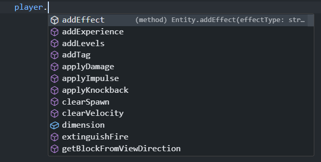

How do we start making our behavior pack?
To start making our behavior pack, we need to create a new folder. We can name this folder anything we want, but for this tutorial, we will name it "TutorialBP".
After creating the folder, we need to create a new file called "manifest.json". This file will tell Minecraft what our behavior pack is called, what version it is, and more.
First, we need a UUID. A UUID is a unique identifier that is used to identify our behavior pack. We can use this website to generate a UUID.
Next, copy and paste the following code into your manifest.json file, editting the values to your liking.
{
"format_version": 2,
"header": {
"name": "Your Behavior Pack Name",
"description": "Your Behavior Pack Description",
"uuid": "Your UUID",
"version": [
1,
1,
0
],
"min_engine_version": [
1,
18,
0
]
},
"modules": [
{
"type": "data",
"uuid": "Your UUID",
"version": [
0,
0,
1
]
},
{
"type": "script",
"language": "javascript",
"entry": "scripts/index.js",
"uuid": "Your UUID",
"version": "1.4.0-beta"
}
],
"metadata": {
"authors": [
"Your Name"
]
},
"dependencies": [
{
"description": "@minecraft/server module dependency",
"module_name": "@minecraft/server",
"version": "1.4.0-beta"
},
{
"description": "@minecraft/server-ui module dependency",
"module_name": "@minecraft/server-ui",
"version": "1.2.0-beta"
}
]
}
What next?
Now that we have created our behavior pack manifest, Minecraft will recognize our behavior pack. However, we still need to add some code to our behavior pack.
So, let's create a new folder called "scripts". Inside of this folder, we will create a new file called "index.js". This file will contain all of our code.
This is our current file structure:
TutorialBP
├── manifest.json
└── scripts
└── index.js
Installing our packages.
Now that we have our file structure, we need to install the VS Code Package. This will allow us to have code completion like this:
To install the VS Code Package, we need to open a terminal. To do this, press these keys on your keyboard: Ctrl + Shift + '.
After opening the terminal, we need to run the following commands:
npm i @minecraft/server npm i @minecraft/server-gametest npm i @minecraft/server-ui
After running these commands, we should see a new folder called "node_modules". This folder contains all of our packages and means that we have successfully installed our packages.